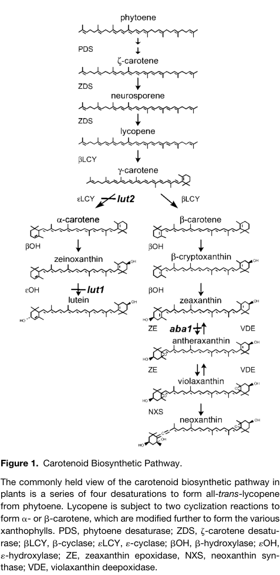

CRTISO (carotenoid isomerase; prolycopene isomerase, EC 5.2.1.13; also CCR2) is a nuclear-encoded, plastid-targeted flavoprotein of the carotenoid/retinoid oxidoreductase family that catalyses the last step of the plant poly-cis route from phytoene to lycopene. In plants and cyanobacteria the desaturases PDS and ZDS introduce cis double bonds, so the product of ZDS is 7,7',9,9'-tetra-cis-lycopene (prolycopene) rather than all-trans-lycopene. CRTISO isomerises the adjacent 7,9 (and 7',9') cis pairs of prolycopene and of its precursor 7,9,9'-tri-cis-neurosporene to the trans configuration, yielding all-trans-lycopene, the substrate of the lycopene beta- and epsilon-cyclases and hence the precursor of all cyclic carotenes and xanthophylls (lutein, violaxanthin, neoxanthin, zeaxanthin) and of the apocarotenoid hormones derived from them. The enzyme is homologous to the bacterial CRTI-type desaturases and binds FAD in an N-terminal dinucleotide-binding fold, but it catalyses a non-redox reaction that requires the reduced flavin and a membrane environment; unlike CRTI it has no desaturase activity and it does not act on cis-zeta-carotenes, which are handled by Z-ISO. Because light-driven photoisomerisation can partly replace the enzyme in illuminated tissue, loss of CRTISO (the ccr2 mutant) reduces lutein in green leaves, whereas etiolated seedlings, roots and non-photosynthetic tissues accumulate prolycopene and other poly-cis carotenes in place of xanthophylls. Dark-grown ccr2 etioplasts also lack the prolamellar body and green slowly, a downstream consequence of a cis-carotene-derived apocarotenoid signal that represses prolamellar-body formation. The protein carries a 56-residue chloroplast transit peptide and is a peripheral membrane protein of plastid membranes; its transcription is controlled by the histone methyltransferase SDG8/CCR1.
| GO Term | Evidence | Action | Reason |
|---|---|---|---|
|
GO:0009507
chloroplast
|
ISM
GO_REF:0000122 |
ACCEPT |
Summary: Sequence-based (AtSubP) prediction of chloroplast localization. Consistent with the experimentally mapped 56-residue chloroplast transit peptide (cleavage after Ser-56 with N-acetylation of Val-57 in the plant N-terminal acetylome), with UniProt's plastid/chloroplast membrane assignment, and with the enzyme's substrates and phenotype, which are entirely plastidial. The enzyme also functions in etioplasts and other non-green plastids, so 'chloroplast' describes the major but not the only plastid type in which it acts.
Reason: Correct organelle for a carotenoid biosynthetic enzyme whose precursor carries a chloroplast transit peptide and whose loss changes the pigment composition of chloroplasts (lutein deficiency) and etioplasts (poly-cis carotene accumulation). Retained as a core location.
Supporting Evidence:
file:ARATH/CRTISO/CRTISO-uniprot.txt
SUBCELLULAR LOCATION: Plastid, chloroplast membrane {ECO:0000250};
PMID:22223895
post-translational N-α-acetylation of the mature protein after removal of the transit peptide
PMID:11884677
The Arabidopsis CRTISO locus was identified by the partial inhibition of lutein synthesis in light-grown tissue and the accumulation of poly-cis-carotene precursors in dark-grown tissue of crtISO mutants
|
|
GO:0009662
etioplast organization
|
IBA
GO_REF:0000033 |
KEEP AS NON CORE |
Summary: PAINT propagation of the Arabidopsis ccr2 phenotype (etioplasts lacking a prolamellar body) to the plant CRTISO clade at node PTN005296160. Q9M9Y8 in its own WITH/FROM is the expected marker that the IBD was seeded by this gene's IMP. The phenotype is real and mechanistically understood: it is caused by a cis-carotene-derived apocarotenoid signal that accumulates when CRTISO is missing and represses prolamellar-body formation, and it is reverted by blocking upstream cis-carotene synthesis (ziso) or carotenoid cleavage dioxygenase activity.
Reason: CRTISO does none of the work of assembling an etioplast; it is a lycopene biosynthetic enzyme whose absence perturbs prolamellar-body formation indirectly, through the accumulation and cleavage of its poly-cis substrates. That is an upstream requirement (TAIR curated the underlying IMP with acts_upstream_of_or_within), not participation in etioplast organization, so the term is kept as a genuine but non-core, downstream process. The phylogenetic inference itself is reasonable because the same poly-cis pathway, and hence the same cis-carotene accumulation in the dark, operates in all plant CRTISO orthologs (tomato tangerine etiolated seedlings also accumulate cis-carotenes).
Supporting Evidence:
PMID:11884677
Etioplasts of dark-grown crtISO mutants accumulate acyclic poly-cis-carotenoids in place of cyclic all-trans-xanthophylls and also lack prolamellar bodies (PLBs), the lattice of tubular membranes that defines an etioplast. This demonstrates a requirement for carotenoid biosynthesis to form the PLB.
PMID:32003746
chemical inhibition of carotenoid cleavage dioxygenase activity restored PLB formation in ccr2 etioplasts during skotomorphogenesis
|
|
GO:0009662
etioplast organization
|
IMP
PMID:11884677 Identification of the carotenoid isomerase provides insight ... |
KEEP AS NON CORE |
Summary: Park et al. showed by electron microscopy that dark-grown ccr2 (crtISO) etioplasts accumulate acyclic poly-cis carotenoids instead of cyclic all-trans xanthophylls and lack prolamellar bodies, and that seedlings green more slowly on illumination. The cached record is abstract-only, but the claim is stated explicitly in the abstract and was reproduced and mechanistically dissected later (the PLB defect is due to a cis-carotene-derived apocarotenoid signal, and is rescued in ccr2 ziso double mutants and by carotenoid cleavage dioxygenase inhibitors).
Reason: A robust, well-documented mutant phenotype, correctly annotated by TAIR as acts_upstream_of_or_within. CRTISO's own activity is prolycopene isomerisation; the prolamellar-body defect is a downstream consequence of altered carotenoid composition and signalling, not a step of etioplast assembly that CRTISO performs. Kept as non-core rather than accepted as a core function or removed.
Supporting Evidence:
PMID:11884677
The absence of PLBs in crtISO mutants demonstrates a function for this unique structure and carotenoids in facilitating chloroplast development during the first critical days of seedling germination and photomorphogenesis.
PMID:32003746
ccr2 is similar to cop1/det1 mutants in that it lacks a PLB in etioplasts, yet it is unique among PLB-deficient mutants in having normal PChlide and POR protein levels
|
|
GO:0016116
carotenoid metabolic process
|
IEA
GO_REF:0000002 |
MODIFY |
Summary: InterPro2GO mapping from IPR045892 (prolycopene isomerase-like family). This broader family also contains the cyanobacterial CrtD C-3',4' desaturase of myxoxanthophyll biosynthesis, so InterPro mapped it to the generic parent 'carotenoid metabolic process'. For CRTISO the process is unambiguously biosynthetic: it converts prolycopene to all-trans-lycopene in the lycopene branch of carotenoid biosynthesis.
Reason: Not wrong, but less specific than the experimental evidence supports. The more informative term is GO:0016117 carotenoid biosynthetic process (already carried by the gene from IPR014101, TAS and this review), with GO:1901177 lycopene biosynthetic process as the most specific pathway term (proposed as NEW below).
Proposed replacements:
carotenoid biosynthetic process
Supporting Evidence:
PMID:11884677
carotenoid desaturation in plants requires a third distinct enzyme activity, the carotenoid isomerase (CRTISO), which, unlike phytoene and zeta-carotene desaturases, apparently arose from a progenitor bacterial desaturase
file:ARATH/CRTISO/CRTISO-uniprot.txt
PATHWAY: Carotenoid biosynthesis; lycopene biosynthesis.
|
|
GO:0016117
carotenoid biosynthetic process
|
IEA
GO_REF:0000002 |
ACCEPT |
Summary: InterPro2GO mapping from IPR014101 (prolycopene isomerase family), an entry defined on the Arabidopsis CRTISO itself. CRTISO catalyses the terminal isomerisation of the poly-cis desaturation route to all-trans-lycopene, a committed step of carotenoid biosynthesis.
Reason: Correct and appropriately specific for a domain-level inference; the experimental annotations (TAS, IMP) and the mutant pigment phenotypes agree.
Supporting Evidence:
PMID:21209101
CRTISO isomerizes all cis double bonds formed by the action of PDS and ZDS ( 14 ) yielding 7,9,9′,7′-tetra- cis -lycopene 3 (commonly referred to as prolycopene; 15 ) to finally form all- trans -lycopene
|
|
GO:0016117
carotenoid biosynthetic process
|
TAS
PMID:11884677 Identification of the carotenoid isomerase provides insight ... |
ACCEPT |
Summary: Traceable author statement from the paper that identified Arabidopsis CRTISO by positional cloning of ccr2 and showed that the recombinant enzyme isomerises poly-cis carotenoids to all-trans carotenoids. ccr2 mutants have reduced lutein in light-grown tissue and accumulate poly-cis carotene precursors in the dark.
Reason: The core biological process of this enzyme: it performs a step (prolycopene to all-trans-lycopene) of carotenoid biosynthesis. Supported by genetics and by in vitro enzymology in Arabidopsis and in the tomato ortholog.
Supporting Evidence:
PMID:11884677
The Arabidopsis CRTISO locus was identified by the partial inhibition of lutein synthesis in light-grown tissue and the accumulation of poly-cis-carotene precursors in dark-grown tissue of crtISO mutants
|
|
GO:0016117
carotenoid biosynthetic process
|
TAS
PMID:11884678 Cloning of tangerine from tomato reveals a carotenoid isomer... |
ACCEPT |
Summary: Traceable author statement from the companion paper that cloned the tomato tangerine locus as CRTISO and showed that tangerine fruit accumulate prolycopene instead of all-trans-lycopene. The paper concerns the tomato ortholog (Q8S4R4) but states the function for plant CRTISO generally, and the Arabidopsis enzyme was identified simultaneously with the same function.
Reason: The process is correct for Arabidopsis CRTISO and independently established in Arabidopsis (PMID:11884677); the tomato paper is a legitimate supporting statement for the conserved plant function. Curator use of a companion ortholog paper as TAS is acceptable and is not a mis-attribution.
Supporting Evidence:
PMID:11884678
the tangerine gene, designated CRTISO, encodes an authentic carotenoid isomerase that is required during carotenoid desaturation
PMID:11884678
The function of carotene isomerase in plants presumably is to enable carotenoid biosynthesis to occur in the dark and in nonphotosynthetic tissues.
|
|
GO:0016491
oxidoreductase activity
|
IEA
GO_REF:0000002 |
REMOVE |
Summary: InterPro2GO mapping from IPR002937, the amine oxidase domain, an FAD-binding fold shared by monoamine/polyamine oxidases, CRTI-type carotene desaturases and CRTISO. CRTISO retains the fold and binds FAD, but its reaction (EC 5.2.1.13, 7,7',9,9'-tetra-cis-lycopene = all-trans-lycopene) is a cis-trans isomerisation with no net change in oxidation state; the reduced flavin acts catalytically, and the enzyme has no desaturase activity.
Reason: A fold-level paralog activity that this protein does not have. CRTISO is classified as an isomerase (EC 5.2.1.13) and its GO activity GO:0046608 sits under cis-trans isomerase activity, not under oxidoreductase activity. Purified CRTISO was shown to be an FAD(red)-dependent flavoprotein catalysing a non-redox reaction and to lack desaturase activity. The earlier 'reversible redox' wording in the 2004 in vitro study and in UniProt describes a proposed transient-hydride mechanism, not an oxidoreductase activity on a substrate. Removing this IEA does not contradict any experimental annotation.
Supporting Evidence:
PMID:21209101
The reduced form of this cofactor catalyzes a reaction not involving net redox changes
PMID:21209101
the findings presented place CRTISO into a novel group of flavoproteins catalyzing non-redox reactions with the help of reduced flavins
PMID:15557094
However, CRTISO does not possess any desaturase activity
file:ARATH/CRTISO/CRTISO-uniprot.txt
EC=5.2.1.13;
|
|
GO:0031969
chloroplast membrane
|
IEA
GO_REF:0000044 |
ACCEPT |
Summary: Mapped from the UniProt subcellular location 'Plastid, chloroplast membrane; peripheral membrane protein', which UniProt itself records by similarity (ECO:0000250). Membrane association is strongly supported biochemically: purified CRTISO is inactive on micellar substrate and requires a membrane environment (bacterial membranes or liposomes) for catalysis, and its substrates are membrane-embedded hydrocarbons. GO:0031969 denotes the envelope bilayers, the usual site of the plant carotene desaturation enzymes; direct sub-plastid localization data for the Arabidopsis protein are not in the cached literature.
Reason: Consistent with UniProt, with the transit peptide, and with the membrane requirement of the enzyme. Accepted as the core site of action while noting that the envelope versus thylakoid assignment for Arabidopsis CRTISO rests on similarity and proteomics rather than on direct imaging.
Supporting Evidence:
file:ARATH/CRTISO/CRTISO-uniprot.txt
SUBCELLULAR LOCATION: Plastid, chloroplast membrane {ECO:0000250};
PMID:15557094
A purified His-tagged form of CRTISO was enzymatically inactive with poly-cis-carotenes when present in Triton X-100 micelles or in liposomes prepared from E. coli lipids or DMPC
|
|
GO:0046608
carotenoid isomerase activity
|
IBA
GO_REF:0000033 |
ACCEPT |
Summary: PAINT inference at node PTN008706876 for the CRTISO/CrtH clade; the Arabidopsis gene's own IMP is one of the descendant evidences and appears in WITH/FROM as expected. The activity is the defining function of the clade (plant and cyanobacterial prolycopene isomerases).
Reason: Correct at the right level of specificity; GO:0046608 is defined as catalysis of the isomerisation of poly-cis-carotenoids to all-trans-carotenoids, exactly what Park et al. measured for recombinant Arabidopsis CRTISO and what Rhea 30971 / EC 5.2.1.13 describe.
Supporting Evidence:
PMID:11884677
enzymatic analysis of CRTISO expressed in Escherichia coli confirmed that the enzyme catalyzes the isomerization of poly-cis-carotenoids to all-trans-carotenoids
|
|
GO:0046608
carotenoid isomerase activity
|
IEA
GO_REF:0000002 |
ACCEPT |
Summary: InterPro2GO mapping from IPR014101, the prolycopene isomerase family defined on Arabidopsis CRTISO. Correct activity.
Reason: Domain-level inference that coincides with the experimentally demonstrated activity of this very protein.
Supporting Evidence:
file:ARATH/CRTISO/CRTISO-uniprot.txt
Reaction=7,7',9,9'-tetra-cis-lycopene = all-trans-lycopene;
|
|
GO:0046608
carotenoid isomerase activity
|
IMP
PMID:11884677 Identification of the carotenoid isomerase provides insight ... |
ACCEPT |
Summary: TAIR annotation from the identification paper: ccr2 mutants accumulate poly-cis carotene precursors in the dark and are lutein-deficient in the light, and CRTISO expressed in E. coli isomerises poly-cis carotenoids to all-trans carotenoids. Later in vitro work on the tomato ortholog defined the regiospecificity (adjacent 7,9 cis pairs of neurosporene and lycopene; not cis-zeta-carotenes) and the FAD(red) requirement.
Reason: The core molecular function, established by mutant analysis and recombinant enzyme assay in Arabidopsis and corroborated by purified-enzyme kinetics on the tomato ortholog.
Supporting Evidence:
PMID:11884677
enzymatic analysis of CRTISO expressed in Escherichia coli confirmed that the enzyme catalyzes the isomerization of poly-cis-carotenoids to all-trans-carotenoids
PMID:15557094
CRTISO isomerizes adjacent cis-double bonds at C7 and C9 pairwise into the trans-configuration, but is incapable of isomerizing single cis-double bonds at C9 and C9′
|
|
GO:0046608
carotenoid isomerase activity
|
IMP
PMID:11884677 Identification of the carotenoid isomerase provides insight ... |
ACCEPT |
Summary: TIGR annotation of the same evidence as the TAIR IMP row above (duplicate row from a second annotating group).
Reason: Same evidence and same conclusion as the TAIR row; duplicates with identical term and evidence are acceptable.
Supporting Evidence:
PMID:11884677
enzymatic analysis of CRTISO expressed in Escherichia coli confirmed that the enzyme catalyzes the isomerization of poly-cis-carotenoids to all-trans-carotenoids
|
|
GO:1901177
lycopene biosynthetic process
|
IMP
PMID:11884677 Identification of the carotenoid isomerase provides insight ... |
NEW |
Summary: Proposed specific process term. CRTISO catalyses the final reaction of lycopene formation in plants, the isomerisation of 7,7',9,9'-tetra-cis-lycopene (prolycopene) to all-trans-lycopene (Rhea 30971; UniProt pathway 'Carotenoid biosynthesis; lycopene biosynthesis'). ccr2 mutants accumulate prolycopene and its poly-cis precursors in the dark, and the recombinant enzyme converts them to the all-trans products.
Reason: Participation test passed: CRTISO itself performs a catalytic step of lycopene biosynthesis, not merely a requirement for it. Comparator check passed: Arabidopsis ZDS1, which performs the preceding step of the same route, carries GO:1901177 by IDA, and the carotene backbone module uses GO:1901177 as the concept for the PDS/Z-ISO/ZDS/CRTISO node. GO:1901177 is not an ancestor or descendant of the existing GO:0016117 annotation (in the current ontology it descends from GO:0016120 carotene biosynthetic process, which is not under carotenoid biosynthetic process), so it adds pathway-level precision rather than redundancy.
Supporting Evidence:
PMID:11884677
The Arabidopsis CRTISO locus was identified by the partial inhibition of lutein synthesis in light-grown tissue and the accumulation of poly-cis-carotene precursors in dark-grown tissue of crtISO mutants
PMID:21209101
CRTISO isomerizes all cis double bonds formed by the action of PDS and ZDS ( 14 ) yielding 7,9,9′,7′-tetra- cis -lycopene 3 (commonly referred to as prolycopene; 15 ) to finally form all- trans -lycopene
PMID:15557094
converting 7,9,9′-tri-cis-neurosporene to 9′-cis-neurosporene and 7′9′-di-cis-lycopene into all-trans-lycopene
file:ARATH/CRTISO/CRTISO-uniprot.txt
PATHWAY: Carotenoid biosynthesis; lycopene biosynthesis.
|
Q: What is the physiological reductant that keeps CRTISO-bound FAD reduced inside plastids? In vitro the enzyme depended on the E. coli respiratory chain or on chemical reductants under nitrogen; the plastid electron donor (plastoquinol, NAD(P)H via a membrane dehydrogenase, or another carrier) has not been identified.
Suggested experts: Peter Beyer, Joseph Hirschberg
Q: Where within the plastid is Arabidopsis CRTISO located (envelope inner membrane versus thylakoid), and does it associate physically with ZDS or the cyclases? The current 'chloroplast membrane' annotation rests on similarity and on proteomic fractionation rather than on direct localization of the Arabidopsis protein.
Suggested experts: Barry J. Pogson, Christopher I. Cazzonelli
Q: Do the substrate specificity (strict requirement for adjacent 7,9 cis pairs, no action on cis-zeta-carotenes) and the FAD(red) dependence shown for the tomato enzyme hold quantitatively for Arabidopsis CRTISO, and does the Arabidopsis paralog At1g57770 (CRTISO2) have any isomerase activity in planta?
Suggested experts: Barry J. Pogson, Peter Beyer
Experiment: Express and purify His-tagged mature Arabidopsis CRTISO (residues 57-595), confirm bound FAD by HPLC-MS, and assay it under N2 with dithionite-reduced FAD in phosphatidylcholine liposomes loaded with prolycopene, 7,9,9'-tri-cis-neurosporene and 9,9'-di-cis-zeta-carotene; follow products by C30 reversed-phase HPLC with photodiode-array detection. Include apo-enzyme and oxidized-FAD controls.
Hypothesis: Arabidopsis CRTISO, like the tomato enzyme, is an FAD(red)-dependent non-redox isomerase that acts only on adjacent 7,9 cis pairs.
Type: in vitro enzyme assay with purified recombinant protein
Experiment: Combine confocal imaging of a CRTISO-GFP fusion driven by the native promoter in the ccr2 background (checking complementation of the lutein phenotype) with immunoblotting of purified envelope, stroma and thylakoid fractions from Arabidopsis chloroplasts and of etioplast membranes, using salt and carbonate washes to test peripheral versus integral association.
Hypothesis: CRTISO is a peripheral protein of the chloroplast inner envelope membrane.
Type: subcellular localization by fluorescence microscopy and fractionation
Experiment: Compare etioplast ultrastructure and POR/PChlide levels in ccr2, ccr2 ziso, ccr2 treated with carotenoid cleavage dioxygenase inhibitors, and ccr2 complemented with a catalytically dead CRTISO (dinucleotide-binding-motif mutant); identify the candidate apocarotenoid by LC-MS of etiolated tissue.
Hypothesis: The prolamellar-body defect of ccr2 is caused by a cleavage product of accumulated cis-carotenes rather than by the absence of CRTISO protein or of all-trans carotenoids.
Type: genetic epistasis with electron microscopy and metabolite profiling
The research report should be a detailed narrative explaining the function, biological processes, and localization of the gene product. Citations should be given for all claims.
You should prioritize authoritative reviews and primary scientific literature when conducting research. You can supplement
this with annotations you find in gene/protein databases, but these can be outdated or inaccurate.
We are specifically interested in the primary function of the gene - for enzymes, what reaction is catalyzed, and what is the substrate specificity? For transporters, what is the substrate? For structural proteins or adapters, what is the broader structural role? For signaling molecules, what is the role in the pathway.
We are interested in where in or outside the cell the gene product carries out its function.
We are also interested in the signaling or biochemical pathways in which the gene functions. We are less interested in broad pleiotropic effects, except where these elucidate the precise role.
Include evidence where possible. We are interested in both experimental evidence as well as inference from structure, evolution, or bioinformatic analysis. Precise studies should be prioritized over high-throughput, where available.
The requested protein identity is verified. UniProt Q9M9Y8 corresponds to the Arabidopsis thaliana nuclear locus At1g06820, originally cloned as F4H5.10, whose accepted names include CRTISO, CRTISO1, CCR2, carotenoid isomerase, and prolycopene isomerase. Positional cloning and three independent ccr2 alleles linked this locus to the carotenoid-isomerase defect. It should not be confused with the distinct Arabidopsis paralog At1g57770/CRTISO2, for which functional carotenoid-isomerase activity was not established in the reviewed evidence. Thus, the organism, symbol, aliases, and supplied UniProt description are mutually consistent. (ruizsola2012carotenoidbiosynthesisin pages 7-8, park2002identificationofthe pages 4-6, cazzonelli2009regulationofcarotenoid pages 9-11)
CRTISO is a chloroplast-targeted, membrane-associated flavoprotein that completes the late cis-to-trans isomerization steps of linear carotene biosynthesis. Its principal physiological outcome is production of all-trans-lycopene, the branch-point substrate for α- and β-carotene synthesis. Its most severe loss-of-function consequences occur in darkness, when photochemical isomerization cannot substitute for the enzyme. (ruizsola2012carotenoidbiosynthesisin pages 7-8, cazzonelli2020aciscarotenederived pages 1-2)
| Annotation question | Conclusion | Evidence type/system | Confidence / limitations |
|---|---|---|---|
| Identity and aliases | The target is Arabidopsis thaliana At1g06820, also named CCR2, CRTISO/CRTISO1, and originally cloned as F4H5.10; it corresponds to UniProt Q9M9Y8. At1g57770/CRTISO2 is a separate paralog and has not been experimentally demonstrated to encode the functional carotenoid isomerase. (ruizsola2012carotenoidbiosynthesisin pages 7-8, park2002identificationofthe pages 4-6, cazzonelli2009regulationofcarotenoid pages 9-11) | Direct Arabidopsis positional cloning with three independent mutant alleles; locus-specific literature and curated Arabidopsis review. | High. The gene, organism, aliases, and mutant complementation logic are concordant. CRTISO2 must not be conflated with this target. |
| Catalytic reaction and substrate specificity | CRTISO catalyzes cis-to-trans isomerization of late, linear C40 carotene intermediates: 7,9,9′-tri-cis-neurosporene → 9′-cis-neurosporene and 7′,9′-di-cis-lycopene → all-trans-lycopene; recombinant CRTISO also shifts poly-cis lycopene, neurosporene, and β-carotene pools toward trans forms. It is not supported as a desaturase or cyclase. (park2002identificationofthe pages 6-7, ruizsola2012carotenoidbiosynthesisin pages 7-8) | Direct recombinant-enzyme assay using E. coli-expressed Arabidopsis CRTISO and carotenoids from dark-grown Arabidopsis ccr2 tissue; exact conversions summarized from subsequent biochemical work. | High for isomerase function; moderate for complete substrate range. Published evidence defines representative substrates, but comprehensive kinetic constants and purified-substrate specificity are unavailable in the gathered evidence. |
| FAD and membrane mechanism | Activity requires a membrane environment and enzyme-bound FAD in its reduced state. The reaction changes double-bond geometry without a net substrate redox change, consistent with the carotenoid/retinoid oxidoreductase and FAD/NAD-binding structural-family annotations. (ruizsola2012carotenoidbiosynthesisin pages 7-8, schaub2012onthestructure pages 8-9) | Biochemical synthesis and mechanistic comparison with homologous FAD-dependent carotenoid enzymes. | Moderate–high. Reduced-FAD and membrane dependence are supported, but the physiological reductant/electron-transfer partner and an Arabidopsis CRTISO structure remain unresolved in the cited evidence. |
| Chloroplast and subplastid localization | CRTISO is synthesized as a chloroplast-targeted precursor and functions in plastids. Proteomic syntheses place At1g06820 in plastid membranes, commonly assigned to the chloroplast envelope. (park2002identificationofthe pages 6-7, ruizsola2012carotenoidbiosynthesisin pages 7-8, joyard2009chloroplastproteomicsand pages 8-9, joyard2009chloroplastproteomicsand pages 10-10) | Transit-peptide prediction plus Arabidopsis chloroplast-fraction proteomics/database synthesis. | High for plastid/chloroplast localization; moderate for envelope precision. The subplastid assignment is proteomic rather than a definitive live-cell imaging result, and the retrieved quantitative table was column-disrupted. |
| Pathway position | CRTISO completes the late linear-carotene segment downstream of PDS, ZISO, and ZDS, converting tetra-/poly-cis lycopene intermediates into all-trans-lycopene before lycopene β- and ε-cyclization. This enables production of α-/β-carotenes and downstream xanthophylls such as lutein and violaxanthin. In darkness CRTISO is essential; light-dependent photoisomerization can partially bypass its absence. (ruizsola2012carotenoidbiosynthesisin pages 7-8, cazzonelli2020aciscarotenederived pages 1-2, hou2023reducingpsyactivity pages 1-4) | Direct Arabidopsis mutant biochemistry integrated with pathway reviews and dark/light experiments. | High. Pathway placement is strongly supported; light bypass explains why the null phenotype is more severe in etiolated than illuminated tissue. |
| ccr2 phenotypes and quantitative findings | Dark-grown ccr2 accumulates prolycopene, proneurosporene, pro-ζ-carotene and other poly-cis carotenes, lacks normal etioplast prolamellar bodies, and greens at about half the wild-type rate over three days. Lutein is approximately 10% of wild type after four days of illumination and rises to about 40% in mature leaves; total protochlorophyllide is reduced by 15%. Among 34 mutant etioplasts, 29 had few prothylakoids and 5 had disorganized membrane swirls. (park2002identificationofthe pages 6-7, park2002identificationofthe pages 1-2, park2002identificationofthe pages 4-6, park2002identificationofthe media 7c260e5c) | Direct Arabidopsis genetics, HPLC pigment profiling, microscopy, and de-etiolation measurements. | High. These are locus-specific phenotypes. Broad developmental consequences should be interpreted as downstream effects of altered carotenoid geometry and plastid organization, not separate primary enzymatic functions. |
| Cis-carotene/apocarotenoid signaling | The best-supported model is that excess CRTISO substrates in ccr2 feed a still-unidentified cis-carotene-derived apocarotenoid signal that regulates prolamellar-body formation, chloroplast development, and the PIF3/HY5/POR module. Removing ZISO activity suppressed selected cis-carotenes and restored PLBs in more than 94% of double-mutant etioplasts; chlorophyll recovered to approximately wild-type levels at 48–72 h. Newer PSY suppressor work shows that lowering selected cis-carotenes can rescue plastid biogenesis without restoring total xanthophyll or total cis-carotene pools. (cazzonelli2020aciscarotenederived pages 8-9, cazzonelli2020aciscarotenederived pages 21-22, cazzonelli2020aciscarotenederived pages 1-2, hou2023reducingpsyactivity pages 1-4, hou2023reducingpsyactivity pages 23-26) | Direct Arabidopsis epistasis, chemical inhibition, pigment profiling, protein measurements, and electron microscopy; 2020 peer-reviewed study plus 2023 preprint underlying a 2024 peer-reviewed report. | Moderate–high for existence of signaling; low for signal identity. Genetic and pharmacological evidence is strong, but the active cleavage product, its producing enzyme, receptor, and exact threshold remain unknown. |
| Applications and cross-species relevance | CRTISO is a practical target for manipulating carotenoid geometry, pigment color, plastid development, and nutritional traits. CRISPR disruption of both Brassica napus CRTISO copies produces creamy-white petals, yellowish leaves, reduced total carotenoids, and altered lycopene/α-carotene/γ-carotene levels; crop-expression studies also associate CRTISO with carotenoid-rich tissues. These examples demonstrate translational potential but do not directly annotate Q9M9Y8. | Cross-species crop gene editing, comparative expression, and breeding research; Arabidopsis supplies the mechanistic reference. | Moderate for conserved crop relevance; low for predicting exact agronomic outcomes from Arabidopsis alone. Paralogs, tissue context, illumination, and species-specific pathway regulation can substantially alter phenotypes. |
Table: This table audits the functional annotation of Arabidopsis CRTISO/Q9M9Y8, separating direct locus-specific evidence from review-level synthesis and cross-species inference. It also flags unresolved questions concerning subplastid localization, mechanism, and the proposed cis-carotene-derived signal.
The original Arabidopsis study identified CCR2 as CRTISO through positional cloning, narrowing the mutation to F4H5.10 and confirming the assignment with independent mutant alleles. The encoded protein contains a predicted chloroplast-targeting sequence and a dinucleotide-binding region, and it is evolutionarily related to bacterial CrtI/CrtN-type carotenoid desaturases. Despite that ancestry, recombinant Arabidopsis CRTISO showed carotenoid cis–trans isomerase activity rather than detectable desaturase or cyclase activity. (park2002identificationofthe pages 6-7, park2002identificationofthe pages 4-6)
These findings align with the supplied annotations: carotenoid/retinoid oxidoreductase family, CrtISO/CrtISO-like domains, amino-oxidase-like PF01593/IPR002937 architecture, and FAD/NAD-binding fold. The “oxidoreductase-family” annotation should not be interpreted as evidence that CRTISO performs a net oxidation or reduction of its carotene substrate; its established physiological reaction changes alkene geometry. Reduced flavin is nevertheless required for catalysis. (ruizsola2012carotenoidbiosynthesisin pages 7-8, schaub2012onthestructure pages 8-9)
CRTISO catalyzes cis-to-trans isomerization of late, acyclic C40 carotene intermediates generated by PDS, ZISO, and ZDS. Defined conversions include:
Park and colleagues expressed Arabidopsis CRTISO in E. coli and incubated it with carotenoid extracts from dark-grown ccr2 tissue. The reaction increased trans forms of lycopene and neurosporene and depleted corresponding poly-cis pools. The recombinant enzyme did not exhibit the desaturase or cyclase activities that might have been predicted from its evolutionary relationship to bacterial proteins. (park2002identificationofthe pages 6-7)
The strongest evidence supports specificity for late linear poly-cis carotenes, particularly neurosporene and lycopene isomers, rather than early phytoene. CRTISO is therefore not interchangeable with ZISO: ZISO acts earlier on the central 15-cis bond of ζ-carotene-related intermediates, whereas CRTISO resolves the remaining cis bonds in neurosporene/prolycopene-stage substrates. Exact comprehensive kinetic parameters, a physiological electron donor, and a complete purified-substrate specificity series were not available in the retrieved Arabidopsis literature. (ruizsola2012carotenoidbiosynthesisin pages 7-8, schaub2012onthestructure pages 8-9, cazzonelli2020aciscarotenederived pages 1-2)
Biochemical synthesis indicates that CRTISO activity requires a membrane environment and enzyme-bound FAD in its reduced state. Because cis–trans isomerization has no net change in substrate oxidation state, FAD is thought to facilitate double-bond activation and geometrical rearrangement rather than act as a stoichiometric oxidant. Mechanistic work on the homologous bacterial CRTI family supports this interpretation, but a high-resolution structure and complete catalytic cycle for Arabidopsis Q9M9Y8 remain lacking. (ruizsola2012carotenoidbiosynthesisin pages 7-8, schaub2012onthestructure pages 8-9)
In plastid carotenoid biosynthesis, phytoene is processed through alternating desaturation and isomerization reactions involving PDS, ZISO, ZDS, and CRTISO. CRTISO completes the conversion of tetra-/poly-cis lycopene intermediates into all-trans-lycopene. Lycopene β- and ε-cyclases then direct flux into β-carotene and α-carotene, respectively, followed by production of xanthophylls including lutein, zeaxanthin, violaxanthin, and neoxanthin. (cazzonelli2020aciscarotenederived pages 1-2, hou2023reducingpsyactivity pages 1-4, park2002identificationofthe media 7c260e5c)
This placement explains why loss of CRTISO reduces downstream cyclic carotenoids without necessarily making illuminated plants inviable. In darkness, ZISO and CRTISO are strictly required for the relevant geometrical conversions. Under illumination, sensitized photoisomerization partially bypasses the enzymatic block, permitting some all-trans-lycopene and downstream xanthophyll synthesis. CRTISO is consequently most critical in etioplasts, internal or shaded tissues, and other contexts with insufficient light-driven isomerization. (ruizsola2012carotenoidbiosynthesisin pages 7-8, cazzonelli2020aciscarotenederived pages 1-2)
The retrieved HPLC evidence directly shows accumulation of prolycopene, proneurosporene, and cis-ζ-carotene species in etiolated ccr2, in contrast to wild-type lutein and violaxanthin. It also documents the partial recovery of lutein during illumination. (park2002identificationofthe pages 1-2, park2002identificationofthe media 111cb44e)
Q9M9Y8 is synthesized as a precursor with an N-terminal plastid transit peptide and imported into chloroplast-lineage plastids. Chloroplast-fraction proteomics and curated Arabidopsis localization syntheses assign CRTISO to plastid membranes, commonly the chloroplast envelope. This location is biologically plausible because its carotene substrates are extremely hydrophobic and membrane embedded. (park2002identificationofthe pages 6-7, ruizsola2012carotenoidbiosynthesisin pages 7-8, joyard2009chloroplastproteomicsand pages 8-9, joyard2009chloroplastproteomicsand pages 10-10)
The evidence is strongest for “chloroplast/plastid membrane” and somewhat weaker for an exclusive envelope assignment. The retrieved localization data are principally fractionation/proteomics and database synthesis rather than definitive live-cell imaging of Q9M9Y8. CRTISO also functions in etioplasts—the dark-grown precursors of chloroplasts—where loss of activity causes the most conspicuous biochemical and ultrastructural phenotype. (park2002identificationofthe pages 6-7, joyard2009chloroplastproteomicsand pages 8-9)
Dark-grown ccr2/crtiso seedlings accumulate prolycopene, proneurosporene, pro-ζ-carotene, and additional acyclic poly-cis intermediates instead of normal cyclic all-trans xanthophylls. In illuminated leaves, lutein was about 10% of wild-type abundance after four days and recovered to approximately 40% in mature leaves, demonstrating partial light-dependent bypass rather than complete restoration. Seedling greening proceeded at roughly half the wild-type rate during the first three days. (park2002identificationofthe pages 1-2, park2002identificationofthe pages 4-6)
Wild-type etioplasts contain a paracrystalline prolamellar body (PLB), from which thylakoid membranes develop after illumination. Dark-grown ccr2 etioplasts lack normal PLBs. In the original ultrastructural sample, 29 of 34 mutant etioplasts contained only sparse prothylakoids, while the other 5 of 34 contained disorganized membrane swirls. Total protochlorophyllide was reduced by approximately 15%. These observations link correct carotenoid geometry and composition to membrane organization during etioplast-to-chloroplast differentiation. (park2002identificationofthe pages 6-7)
The broader interpretation should remain disciplined: CRTISO is not itself a membrane-structural protein or canonical light-signaling protein. PLB loss, slow greening, altered photomorphogenesis, and reduced lutein are downstream consequences of its primary enzymatic defect and the abnormal accumulation of cis-carotene substrates. (park2002identificationofthe pages 6-7, park2002identificationofthe pages 1-2)
Research since the original cloning has reframed ccr2 as more than a simple carotenoid-deficiency mutant. The current model proposes that one or more cis-carotenes accumulating when CRTISO is absent are cleaved to produce an unidentified cis-carotene-derived apocarotenoid signal. This signal affects PLB formation and chloroplast differentiation through the POR/PIF3/HY5 regulatory system and acts in parallel with DEETIOLATED1-mediated photomorphogenic control. (cazzonelli2020aciscarotenederived pages 21-22, cazzonelli2020aciscarotenederived pages 1-2)
In a 2020 eLife study, eliminating upstream ZISO activity in the ccr2 background removed selected cis-carotenes and restored PLBs in more than 94% of double-mutant etioplasts, without restoring the normal ccr2 xanthophyll profile. Chlorophyll accumulation recovered to approximately wild-type levels at 48 and 72 hours after de-etiolation. Chemical inhibition of carotenoid-cleavage dioxygenase activity also restored PLB formation, supporting a cleavage product rather than bulk carotenoid deficiency as the regulatory agent. (cazzonelli2020aciscarotenederived pages 8-9, cazzonelli2020aciscarotenederived pages 1-2)
The most recent focused work identified four nonlethal PSY suppressor alleles that rescued the short-photoperiod leaf-virescence and plastid-biogenesis phenotypes of ccr2. These variants altered PSY splicing, catalytic interactions, protein abundance, or binding to ORANGE and reduced selected acyclic cis-carotenes without materially changing total xanthophyll or total cis-carotene accumulation. This supports a concentration-threshold model in which particular intermediates—especially di-cis-ζ-carotene and/or tri-cis-neurosporene—rather than total carotenoid abundance determine signaling output. The work first appeared as a July 2023 bioRxiv preprint and was subsequently published in the Journal of Experimental Botany in 2024 (DOI: 10.1093/jxb/erad443). (hou2023reducingpsyactivity pages 39-42, hou2023reducingpsyactivity pages 1-4, hou2023reducingpsyactivity pages 23-26)
Important uncertainties remain. The active apocarotenoid has not been chemically identified; its producing enzyme, receptor, and precise concentration threshold are unknown. Accordingly, the existence of a cis-carotene-dependent regulatory process is substantially better supported than any proposed molecular identity for the signal. (hou2023reducingpsyactivity pages 1-4, hou2023reducingpsyactivity pages 23-26)
CRTISO abundance is itself developmentally and epigenetically regulated. The histone methyltransferase SDG8/CCR1 controls chromatin marks near At1g06820, and ccr1 mutants show markedly reduced CRTISO expression and a related cis-carotene phenotype. One expression analysis reported At1g06820 as downregulated by a fold-change value of 29.2 in ccr1-1. This is regulatory evidence and should not lead to conflation of CCR1/SDG8, the chromatin regulator, with CCR2/CRTISO, the enzyme studied here. (cazzonelli2009regulationofcarotenoid pages 9-11)
Arabidopsis CRTISO provides a mechanistic reference for manipulating carotenoid geometry and accumulation in crops. Potential applications include:
Species, tissue, and illumination matter strongly. Tomato fruit chromoplasts, rapeseed petals, and Arabidopsis leaves differ in paralog dosage, carotenoid storage, and availability of photoisomerization, so crop outcomes cannot be predicted quantitatively from Arabidopsis alone. (ruizsola2012carotenoidbiosynthesisin pages 7-8, cazzonelli2020aciscarotenederived pages 1-2)
Recommended primary annotation: chloroplast/plastid-membrane prolycopene isomerase (carotenoid isomerase; EC 5.2.1.13) that uses reduced FAD to convert late poly-cis neurosporene/lycopene intermediates into configurations culminating in all-trans-lycopene.
Recommended biological-process annotation: plastid carotenoid biosynthesis; linear-carotene isomerization; provision of all-trans-lycopene for α-/β-carotene and xanthophyll production; indirect control of etioplast PLB formation and chloroplast biogenesis through carotenoid composition and a putative cis-carotene-derived retrograde signal.
Recommended localization annotation: chloroplast-lineage plastids, membrane associated; chloroplast envelope is supported by proteomic synthesis but should be treated as less certain than the general plastid-membrane assignment.
Key unresolved issues: the complete kinetic substrate spectrum, physiological system that reduces FAD, high-resolution Arabidopsis CRTISO structure, exact subplastid topology, and identity/receptor of the proposed cis-apocarotenoid signal.
References
(ruizsola2012carotenoidbiosynthesisin pages 7-8): M. Águila Ruiz-Sola and Manuel Rodríguez-Concepción. Carotenoid biosynthesis in arabidopsis: a colorful pathway. The Arabidopsis Book, 2012:e0158, Jan 2012. URL: https://doi.org/10.1199/tab.0158, doi:10.1199/tab.0158. This article has 742 citations and is from a peer-reviewed journal.
(park2002identificationofthe pages 4-6): Hyoungshin Park, Sarah S. Kreunen, Abby J. Cuttriss, Dean DellaPenna, and Barry J. Pogson. Identification of the carotenoid isomerase provides insight into carotenoid biosynthesis, prolamellar body formation, and photomorphogenesis article, publication date, and citation information can be found at www.plantcell.org/cgi/doi/10.1105/tpc.010302. The Plant Cell Online, 14:321-332, Feb 2002. URL: https://doi.org/10.1105/tpc.010302, doi:10.1105/tpc.010302. This article has 614 citations.
(cazzonelli2009regulationofcarotenoid pages 9-11): Christopher I. Cazzonelli, Abby J. Cuttriss, Susan B. Cossetto, William Pye, Peter Crisp, Jim Whelan, E. Jean Finnegan, Colin Turnbull, and Barry J. Pogson. Regulation of carotenoid composition and shoot branching in arabidopsis by a chromatin modifying histone methyltransferase, sdg8. The Plant Cell, 21:39-53, Jan 2009. URL: https://doi.org/10.1105/tpc.108.063131, doi:10.1105/tpc.108.063131. This article has 293 citations.
(cazzonelli2020aciscarotenederived pages 1-2): Christopher I Cazzonelli, Xin Hou, Yagiz Alagoz, John Rivers, Namraj Dhami, Jiwon Lee, Shashikanth Marri, and Barry J Pogson. A cis-carotene derived apocarotenoid regulates etioplast and chloroplast development. Jan 2020. URL: https://doi.org/10.7554/elife.45310, doi:10.7554/elife.45310. This article has 92 citations and is from a domain leading peer-reviewed journal.
(park2002identificationofthe pages 6-7): Hyoungshin Park, Sarah S. Kreunen, Abby J. Cuttriss, Dean DellaPenna, and Barry J. Pogson. Identification of the carotenoid isomerase provides insight into carotenoid biosynthesis, prolamellar body formation, and photomorphogenesis article, publication date, and citation information can be found at www.plantcell.org/cgi/doi/10.1105/tpc.010302. The Plant Cell Online, 14:321-332, Feb 2002. URL: https://doi.org/10.1105/tpc.010302, doi:10.1105/tpc.010302. This article has 614 citations.
(schaub2012onthestructure pages 8-9): Patrick Schaub, Qiuju Yu, Sandra Gemmecker, Pierre Poussin-Courmontagne, Justine Mailliot, Alastair G. McEwen, Sandro Ghisla, Salim Al-Babili, Jean Cavarelli, and Peter Beyer. On the structure and function of the phytoene desaturase crti from pantoea ananatis, a membrane-peripheral and fad-dependent oxidase/isomerase. PLoS ONE, 7:e39550, Jun 2012. URL: https://doi.org/10.1371/journal.pone.0039550, doi:10.1371/journal.pone.0039550. This article has 126 citations and is from a peer-reviewed journal.
(joyard2009chloroplastproteomicsand pages 8-9): Jacques Joyard, Myriam Ferro, Christophe Masselon, Daphné Seigneurin-Berny, Daniel Salvi, Jérôme Garin, and Norbert Rolland. Chloroplast proteomics and the compartmentation of plastidial isoprenoid biosynthetic pathways. Molecular plant, 2 6:1154-80, Nov 2009. URL: https://doi.org/10.1093/mp/ssp088, doi:10.1093/mp/ssp088. This article has 303 citations and is from a highest quality peer-reviewed journal.
(joyard2009chloroplastproteomicsand pages 10-10): Jacques Joyard, Myriam Ferro, Christophe Masselon, Daphné Seigneurin-Berny, Daniel Salvi, Jérôme Garin, and Norbert Rolland. Chloroplast proteomics and the compartmentation of plastidial isoprenoid biosynthetic pathways. Molecular plant, 2 6:1154-80, Nov 2009. URL: https://doi.org/10.1093/mp/ssp088, doi:10.1093/mp/ssp088. This article has 303 citations and is from a highest quality peer-reviewed journal.
(hou2023reducingpsyactivity pages 1-4): Xin Hou, Yagiz Alagoz, Ralf Welsch, Matthew D Mortimer, Barry J. Pogson, and Christopher I. Cazzonelli. Reducing psy activity fine tunes threshold levels of a cis-carotene-derived signal that regulates the pif3/hy5 module and plastid biogenesis. bioRxiv, Jul 2023. URL: https://doi.org/10.1101/2023.06.29.546996, doi:10.1101/2023.06.29.546996. This article has 0 citations.
(park2002identificationofthe pages 1-2): Hyoungshin Park, Sarah S. Kreunen, Abby J. Cuttriss, Dean DellaPenna, and Barry J. Pogson. Identification of the carotenoid isomerase provides insight into carotenoid biosynthesis, prolamellar body formation, and photomorphogenesis article, publication date, and citation information can be found at www.plantcell.org/cgi/doi/10.1105/tpc.010302. The Plant Cell Online, 14:321-332, Feb 2002. URL: https://doi.org/10.1105/tpc.010302, doi:10.1105/tpc.010302. This article has 614 citations.
(park2002identificationofthe media 7c260e5c): Hyoungshin Park, Sarah S. Kreunen, Abby J. Cuttriss, Dean DellaPenna, and Barry J. Pogson. Identification of the carotenoid isomerase provides insight into carotenoid biosynthesis, prolamellar body formation, and photomorphogenesis article, publication date, and citation information can be found at www.plantcell.org/cgi/doi/10.1105/tpc.010302. The Plant Cell Online, 14:321-332, Feb 2002. URL: https://doi.org/10.1105/tpc.010302, doi:10.1105/tpc.010302. This article has 614 citations.
(cazzonelli2020aciscarotenederived pages 8-9): Christopher I Cazzonelli, Xin Hou, Yagiz Alagoz, John Rivers, Namraj Dhami, Jiwon Lee, Shashikanth Marri, and Barry J Pogson. A cis-carotene derived apocarotenoid regulates etioplast and chloroplast development. Jan 2020. URL: https://doi.org/10.7554/elife.45310, doi:10.7554/elife.45310. This article has 92 citations and is from a domain leading peer-reviewed journal.
(cazzonelli2020aciscarotenederived pages 21-22): Christopher I Cazzonelli, Xin Hou, Yagiz Alagoz, John Rivers, Namraj Dhami, Jiwon Lee, Shashikanth Marri, and Barry J Pogson. A cis-carotene derived apocarotenoid regulates etioplast and chloroplast development. Jan 2020. URL: https://doi.org/10.7554/elife.45310, doi:10.7554/elife.45310. This article has 92 citations and is from a domain leading peer-reviewed journal.
(hou2023reducingpsyactivity pages 23-26): Xin Hou, Yagiz Alagoz, Ralf Welsch, Matthew D Mortimer, Barry J. Pogson, and Christopher I. Cazzonelli. Reducing psy activity fine tunes threshold levels of a cis-carotene-derived signal that regulates the pif3/hy5 module and plastid biogenesis. bioRxiv, Jul 2023. URL: https://doi.org/10.1101/2023.06.29.546996, doi:10.1101/2023.06.29.546996. This article has 0 citations.
(park2002identificationofthe media 111cb44e): Hyoungshin Park, Sarah S. Kreunen, Abby J. Cuttriss, Dean DellaPenna, and Barry J. Pogson. Identification of the carotenoid isomerase provides insight into carotenoid biosynthesis, prolamellar body formation, and photomorphogenesis article, publication date, and citation information can be found at www.plantcell.org/cgi/doi/10.1105/tpc.010302. The Plant Cell Online, 14:321-332, Feb 2002. URL: https://doi.org/10.1105/tpc.010302, doi:10.1105/tpc.010302. This article has 614 citations.
(hou2023reducingpsyactivity pages 39-42): Xin Hou, Yagiz Alagoz, Ralf Welsch, Matthew D Mortimer, Barry J. Pogson, and Christopher I. Cazzonelli. Reducing psy activity fine tunes threshold levels of a cis-carotene-derived signal that regulates the pif3/hy5 module and plastid biogenesis. bioRxiv, Jul 2023. URL: https://doi.org/10.1101/2023.06.29.546996, doi:10.1101/2023.06.29.546996. This article has 0 citations.

Journal for the de-novo review of Arabidopsis thaliana prolycopene isomerase /
carotenoid isomerase. Append, do not rewrite.
CRTSO_ARATH, "Prolycopene isomerase, chloroplastic", EC 5.2.1.13,interpro/panther/panther.obo; Q9M9Y8 is a listed member of PTHR46313:SF3 ininterpro/panther/panther-members.tsv). InterPro IPR014101 (CrtISO), IPR045892| PMID | Paper | Cache | Use |
|---|---|---|---|
| 11884677 | Park et al. 2002 Plant Cell — identification of Arabidopsis CRTISO (ccr2) | abstract only (full_text_available: false) |
GOA IMP/TAS source; all quotes from the abstract |
| 11884678 | Isaacson et al. 2002 Plant Cell — tomato tangerine = CRTISO | abstract only | GOA TAS source; tomato ortholog |
| 15557094 | Isaacson et al. 2004 Plant Physiol — in vitro CRTISO assay (tomato enzyme) | full text | substrate specificity, redox/membrane requirement |
| 21209101 | Yu et al. 2011 J Biol Chem — CRTISO is an FAD(red)-dependent non-redox flavoprotein (tomato enzyme) | full text | cofactor, mechanism, regiospecificity |
| 32003746 | Cazzonelli et al. 2020 eLife — cis-carotene-derived apocarotenoid regulates etioplast/chloroplast development | full text | ccr2 PLB phenotype and its mechanism |
| 19174535 | Cazzonelli et al. 2009 Plant Cell — SDG8/CCR1 controls CRTISO transcription | full text | regulation; CRTISO complementation of ccr2 |
| 22223895 | Bienvenut et al. 2012 MCP — N-terminal acetylome | full text (CRTISO data are in supplementary tables, not in the body text) | UniProt transit-peptide cleavage site source |
| 22582030 | Ruiz-Sola & Rodríguez-Concepción 2012 Arabidopsis Book — pathway review | abstract only | background |
| 19969518 | Joyard et al. 2009 Mol Plant — chloroplast proteomics review | abstract only; CRTISO not named in the abstract | not quotable for CRTISO localization; noted as a knowledge gap only |
PMIDs for the non-GOA papers were resolved by exact-title PubMed esearch and title
confirmed by esummary before fetching with uv run ai-gene-review fetch-pmid.
modules/carotene_backbone_biosynthesis.yaml (crtiso_step,acts_upstream_of_or_within, which is theid: Q9M9Y8
gene_symbol: CRTISO
product_type: PROTEIN
aliases:
- CCR2
- At1g06820
- F4H5.10
status: COMPLETE
taxon:
id: NCBITaxon:3702
label: Arabidopsis thaliana
description: >-
CRTISO (carotenoid isomerase; prolycopene isomerase, EC 5.2.1.13; also CCR2) is a
nuclear-encoded, plastid-targeted flavoprotein of the carotenoid/retinoid oxidoreductase
family that catalyses the last step of the plant poly-cis route from phytoene to
lycopene. In plants and cyanobacteria the desaturases PDS and ZDS introduce cis double
bonds, so the product of ZDS is 7,7',9,9'-tetra-cis-lycopene (prolycopene) rather than
all-trans-lycopene. CRTISO isomerises the adjacent 7,9 (and 7',9') cis pairs of
prolycopene and of its precursor 7,9,9'-tri-cis-neurosporene to the trans
configuration, yielding all-trans-lycopene, the substrate of the lycopene beta- and
epsilon-cyclases and hence the precursor of all cyclic carotenes and xanthophylls
(lutein, violaxanthin, neoxanthin, zeaxanthin) and of the apocarotenoid hormones derived
from them. The enzyme is homologous to the bacterial CRTI-type desaturases and binds FAD
in an N-terminal dinucleotide-binding fold, but it catalyses a non-redox reaction that
requires the reduced flavin and a membrane environment; unlike CRTI it has no desaturase
activity and it does not act on cis-zeta-carotenes, which are handled by Z-ISO. Because
light-driven photoisomerisation can partly replace the enzyme in illuminated tissue,
loss of CRTISO (the ccr2 mutant) reduces lutein in green leaves, whereas etiolated
seedlings, roots and non-photosynthetic tissues accumulate prolycopene and other
poly-cis carotenes in place of xanthophylls. Dark-grown ccr2 etioplasts also lack the
prolamellar body and green slowly, a downstream consequence of a cis-carotene-derived
apocarotenoid signal that represses prolamellar-body formation. The protein carries a
56-residue chloroplast transit peptide and is a peripheral membrane protein of plastid
membranes; its transcription is controlled by the histone methyltransferase SDG8/CCR1.
existing_annotations:
- term:
id: GO:0009507
label: chloroplast
evidence_type: ISM
original_reference_id: GO_REF:0000122
qualifier: located_in
review:
summary: >-
Sequence-based (AtSubP) prediction of chloroplast localization. Consistent with the
experimentally mapped 56-residue chloroplast transit peptide (cleavage after Ser-56
with N-acetylation of Val-57 in the plant N-terminal acetylome), with UniProt's
plastid/chloroplast membrane assignment, and with the enzyme's substrates and
phenotype, which are entirely plastidial. The enzyme also functions in etioplasts
and other non-green plastids, so 'chloroplast' describes the major but not the only
plastid type in which it acts.
action: ACCEPT
reason: >-
Correct organelle for a carotenoid biosynthetic enzyme whose precursor carries a
chloroplast transit peptide and whose loss changes the pigment composition of
chloroplasts (lutein deficiency) and etioplasts (poly-cis carotene accumulation).
Retained as a core location.
supported_by:
- reference_id: file:ARATH/CRTISO/CRTISO-uniprot.txt
supporting_text: 'SUBCELLULAR LOCATION: Plastid, chloroplast membrane {ECO:0000250};'
- reference_id: PMID:22223895
supporting_text: >-
post-translational N-α-acetylation of the mature protein after removal of the
transit peptide
reference_section_type: ABSTRACT
- reference_id: PMID:11884677
supporting_text: >-
The Arabidopsis CRTISO locus was identified by the partial inhibition of lutein
synthesis in light-grown tissue and the accumulation of poly-cis-carotene
precursors in dark-grown tissue of crtISO mutants
reference_section_type: ABSTRACT
- term:
id: GO:0009662
label: etioplast organization
evidence_type: IBA
original_reference_id: GO_REF:0000033
qualifier: involved_in
supporting_entities:
- AGI_LocusCode:AT1G06820
- PANTHER:PTN005296160
review:
summary: >-
PAINT propagation of the Arabidopsis ccr2 phenotype (etioplasts lacking a prolamellar
body) to the plant CRTISO clade at node PTN005296160. Q9M9Y8 in its own WITH/FROM is
the expected marker that the IBD was seeded by this gene's IMP. The phenotype is real
and mechanistically understood: it is caused by a cis-carotene-derived apocarotenoid
signal that accumulates when CRTISO is missing and represses prolamellar-body
formation, and it is reverted by blocking upstream cis-carotene synthesis (ziso) or
carotenoid cleavage dioxygenase activity.
action: KEEP_AS_NON_CORE
reason: >-
CRTISO does none of the work of assembling an etioplast; it is a lycopene
biosynthetic enzyme whose absence perturbs prolamellar-body formation indirectly,
through the accumulation and cleavage of its poly-cis substrates. That is an
upstream requirement (TAIR curated the underlying IMP with
acts_upstream_of_or_within), not participation in etioplast organization, so the
term is kept as a genuine but non-core, downstream process. The phylogenetic
inference itself is reasonable because the same poly-cis pathway, and hence the same
cis-carotene accumulation in the dark, operates in all plant CRTISO orthologs
(tomato tangerine etiolated seedlings also accumulate cis-carotenes).
supported_by:
- reference_id: PMID:11884677
supporting_text: >-
Etioplasts of dark-grown crtISO mutants accumulate acyclic poly-cis-carotenoids in
place of cyclic all-trans-xanthophylls and also lack prolamellar bodies (PLBs), the
lattice of tubular membranes that defines an etioplast. This demonstrates a
requirement for carotenoid biosynthesis to form the PLB.
reference_section_type: ABSTRACT
- reference_id: PMID:32003746
supporting_text: >-
chemical inhibition of carotenoid cleavage dioxygenase activity restored PLB
formation in ccr2 etioplasts during skotomorphogenesis
reference_section_type: ABSTRACT
- term:
id: GO:0009662
label: etioplast organization
evidence_type: IMP
original_reference_id: PMID:11884677
qualifier: acts_upstream_of_or_within
review:
summary: >-
Park et al. showed by electron microscopy that dark-grown ccr2 (crtISO) etioplasts
accumulate acyclic poly-cis carotenoids instead of cyclic all-trans xanthophylls and
lack prolamellar bodies, and that seedlings green more slowly on illumination. The
cached record is abstract-only, but the claim is stated explicitly in the abstract
and was reproduced and mechanistically dissected later (the PLB defect is due to a
cis-carotene-derived apocarotenoid signal, and is rescued in ccr2 ziso double
mutants and by carotenoid cleavage dioxygenase inhibitors).
action: KEEP_AS_NON_CORE
reason: >-
A robust, well-documented mutant phenotype, correctly annotated by TAIR as
acts_upstream_of_or_within. CRTISO's own activity is prolycopene isomerisation; the
prolamellar-body defect is a downstream consequence of altered carotenoid
composition and signalling, not a step of etioplast assembly that CRTISO performs.
Kept as non-core rather than accepted as a core function or removed.
supported_by:
- reference_id: PMID:11884677
supporting_text: >-
The absence of PLBs in crtISO mutants demonstrates a function for this unique
structure and carotenoids in facilitating chloroplast development during the first
critical days of seedling germination and photomorphogenesis.
reference_section_type: ABSTRACT
- reference_id: PMID:32003746
supporting_text: >-
ccr2 is similar to cop1/det1 mutants in that it lacks a PLB in etioplasts, yet it
is unique among PLB-deficient mutants in having normal PChlide and POR protein
levels
reference_section_type: INTRODUCTION
- term:
id: GO:0016116
label: carotenoid metabolic process
evidence_type: IEA
original_reference_id: GO_REF:0000002
qualifier: involved_in
supporting_entities:
- InterPro:IPR045892
review:
summary: >-
InterPro2GO mapping from IPR045892 (prolycopene isomerase-like family). This broader
family also contains the cyanobacterial CrtD C-3',4' desaturase of myxoxanthophyll
biosynthesis, so InterPro mapped it to the generic parent 'carotenoid metabolic
process'. For CRTISO the process is unambiguously biosynthetic: it converts
prolycopene to all-trans-lycopene in the lycopene branch of carotenoid biosynthesis.
action: MODIFY
reason: >-
Not wrong, but less specific than the experimental evidence supports. The more
informative term is GO:0016117 carotenoid biosynthetic process (already carried by
the gene from IPR014101, TAS and this review), with GO:1901177 lycopene biosynthetic
process as the most specific pathway term (proposed as NEW below).
proposed_replacement_terms:
- id: GO:0016117
label: carotenoid biosynthetic process
supported_by:
- reference_id: PMID:11884677
supporting_text: >-
carotenoid desaturation in plants requires a third distinct enzyme activity, the
carotenoid isomerase (CRTISO), which, unlike phytoene and zeta-carotene
desaturases, apparently arose from a progenitor bacterial desaturase
reference_section_type: ABSTRACT
- reference_id: file:ARATH/CRTISO/CRTISO-uniprot.txt
supporting_text: 'PATHWAY: Carotenoid biosynthesis; lycopene biosynthesis.'
- term:
id: GO:0016117
label: carotenoid biosynthetic process
evidence_type: IEA
original_reference_id: GO_REF:0000002
qualifier: involved_in
supporting_entities:
- InterPro:IPR014101
review:
summary: >-
InterPro2GO mapping from IPR014101 (prolycopene isomerase family), an entry defined
on the Arabidopsis CRTISO itself. CRTISO catalyses the terminal isomerisation of the
poly-cis desaturation route to all-trans-lycopene, a committed step of carotenoid
biosynthesis.
action: ACCEPT
reason: >-
Correct and appropriately specific for a domain-level inference; the experimental
annotations (TAS, IMP) and the mutant pigment phenotypes agree.
supported_by:
- reference_id: PMID:21209101
supporting_text: >-
CRTISO isomerizes all cis double bonds formed by the action of PDS and ZDS ( 14 )
yielding 7,9,9′,7′-tetra- cis -lycopene 3 (commonly referred to as prolycopene; 15 )
to finally form all- trans -lycopene
reference_section_type: INTRODUCTION
- term:
id: GO:0016117
label: carotenoid biosynthetic process
evidence_type: TAS
original_reference_id: PMID:11884677
qualifier: acts_upstream_of_or_within
review:
summary: >-
Traceable author statement from the paper that identified Arabidopsis CRTISO by
positional cloning of ccr2 and showed that the recombinant enzyme isomerises
poly-cis carotenoids to all-trans carotenoids. ccr2 mutants have reduced lutein in
light-grown tissue and accumulate poly-cis carotene precursors in the dark.
action: ACCEPT
reason: >-
The core biological process of this enzyme: it performs a step (prolycopene to
all-trans-lycopene) of carotenoid biosynthesis. Supported by genetics and by in
vitro enzymology in Arabidopsis and in the tomato ortholog.
supported_by:
- reference_id: PMID:11884677
supporting_text: >-
The Arabidopsis CRTISO locus was identified by the partial inhibition of lutein
synthesis in light-grown tissue and the accumulation of poly-cis-carotene
precursors in dark-grown tissue of crtISO mutants
reference_section_type: ABSTRACT
- term:
id: GO:0016117
label: carotenoid biosynthetic process
evidence_type: TAS
original_reference_id: PMID:11884678
qualifier: acts_upstream_of_or_within
review:
summary: >-
Traceable author statement from the companion paper that cloned the tomato
tangerine locus as CRTISO and showed that tangerine fruit accumulate prolycopene
instead of all-trans-lycopene. The paper concerns the tomato ortholog (Q8S4R4) but
states the function for plant CRTISO generally, and the Arabidopsis enzyme was
identified simultaneously with the same function.
action: ACCEPT
reason: >-
The process is correct for Arabidopsis CRTISO and independently established in
Arabidopsis (PMID:11884677); the tomato paper is a legitimate supporting statement
for the conserved plant function. Curator use of a companion ortholog paper as TAS
is acceptable and is not a mis-attribution.
supported_by:
- reference_id: PMID:11884678
supporting_text: >-
the tangerine gene, designated CRTISO, encodes an authentic carotenoid isomerase
that is required during carotenoid desaturation
reference_section_type: ABSTRACT
- reference_id: PMID:11884678
supporting_text: >-
The function of carotene isomerase in plants presumably is to enable carotenoid
biosynthesis to occur in the dark and in nonphotosynthetic tissues.
reference_section_type: ABSTRACT
- term:
id: GO:0016491
label: oxidoreductase activity
evidence_type: IEA
original_reference_id: GO_REF:0000002
qualifier: enables
supporting_entities:
- InterPro:IPR002937
review:
summary: >-
InterPro2GO mapping from IPR002937, the amine oxidase domain, an FAD-binding fold
shared by monoamine/polyamine oxidases, CRTI-type carotene desaturases and CRTISO.
CRTISO retains the fold and binds FAD, but its reaction (EC 5.2.1.13,
7,7',9,9'-tetra-cis-lycopene = all-trans-lycopene) is a cis-trans isomerisation
with no net change in oxidation state; the reduced flavin acts catalytically, and
the enzyme has no desaturase activity.
action: REMOVE
reason: >-
A fold-level paralog activity that this protein does not have. CRTISO is classified
as an isomerase (EC 5.2.1.13) and its GO activity GO:0046608 sits under cis-trans
isomerase activity, not under oxidoreductase activity. Purified CRTISO was shown to
be an FAD(red)-dependent flavoprotein catalysing a non-redox reaction and to lack
desaturase activity. The earlier 'reversible redox' wording in the 2004 in vitro
study and in UniProt describes a proposed transient-hydride mechanism, not an
oxidoreductase activity on a substrate. Removing this IEA does not contradict any
experimental annotation.
supported_by:
- reference_id: PMID:21209101
supporting_text: >-
The reduced form of this cofactor catalyzes a reaction not involving net redox
changes
reference_section_type: ABSTRACT
- reference_id: PMID:21209101
supporting_text: >-
the findings presented place CRTISO into a novel group of flavoproteins catalyzing
non-redox reactions with the help of reduced flavins
reference_section_type: DISCUSSION
- reference_id: PMID:15557094
supporting_text: However, CRTISO does not possess any desaturase activity
reference_section_type: DISCUSSION
- reference_id: file:ARATH/CRTISO/CRTISO-uniprot.txt
supporting_text: EC=5.2.1.13;
- term:
id: GO:0031969
label: chloroplast membrane
evidence_type: IEA
original_reference_id: GO_REF:0000044
qualifier: located_in
supporting_entities:
- UniProtKB-SubCell:SL-0053
review:
summary: >-
Mapped from the UniProt subcellular location 'Plastid, chloroplast membrane;
peripheral membrane protein', which UniProt itself records by similarity
(ECO:0000250). Membrane association is strongly supported biochemically: purified
CRTISO is inactive on micellar substrate and requires a membrane environment
(bacterial membranes or liposomes) for catalysis, and its substrates are
membrane-embedded hydrocarbons. GO:0031969 denotes the envelope bilayers, the usual
site of the plant carotene desaturation enzymes; direct sub-plastid localization
data for the Arabidopsis protein are not in the cached literature.
action: ACCEPT
reason: >-
Consistent with UniProt, with the transit peptide, and with the membrane requirement
of the enzyme. Accepted as the core site of action while noting that the envelope
versus thylakoid assignment for Arabidopsis CRTISO rests on similarity and
proteomics rather than on direct imaging.
supported_by:
- reference_id: file:ARATH/CRTISO/CRTISO-uniprot.txt
supporting_text: 'SUBCELLULAR LOCATION: Plastid, chloroplast membrane {ECO:0000250};'
- reference_id: PMID:15557094
supporting_text: >-
A purified His-tagged form of CRTISO was enzymatically inactive with
poly-cis-carotenes when present in Triton X-100 micelles or in liposomes prepared
from E. coli lipids or DMPC
reference_section_type: RESULTS
- term:
id: GO:0046608
label: carotenoid isomerase activity
evidence_type: IBA
original_reference_id: GO_REF:0000033
qualifier: enables
supporting_entities:
- AGI_LocusCode:AT1G06820
- PANTHER:PTN008706876
review:
summary: >-
PAINT inference at node PTN008706876 for the CRTISO/CrtH clade; the Arabidopsis
gene's own IMP is one of the descendant evidences and appears in WITH/FROM as
expected. The activity is the defining function of the clade (plant and
cyanobacterial prolycopene isomerases).
action: ACCEPT
reason: >-
Correct at the right level of specificity; GO:0046608 is defined as catalysis of the
isomerisation of poly-cis-carotenoids to all-trans-carotenoids, exactly what Park et
al. measured for recombinant Arabidopsis CRTISO and what Rhea 30971 / EC 5.2.1.13
describe.
supported_by:
- reference_id: PMID:11884677
supporting_text: >-
enzymatic analysis of CRTISO expressed in Escherichia coli confirmed that the
enzyme catalyzes the isomerization of poly-cis-carotenoids to all-trans-carotenoids
reference_section_type: ABSTRACT
- term:
id: GO:0046608
label: carotenoid isomerase activity
evidence_type: IEA
original_reference_id: GO_REF:0000002
qualifier: enables
supporting_entities:
- InterPro:IPR014101
review:
summary: >-
InterPro2GO mapping from IPR014101, the prolycopene isomerase family defined on
Arabidopsis CRTISO. Correct activity.
action: ACCEPT
reason: >-
Domain-level inference that coincides with the experimentally demonstrated activity
of this very protein.
supported_by:
- reference_id: file:ARATH/CRTISO/CRTISO-uniprot.txt
supporting_text: Reaction=7,7',9,9'-tetra-cis-lycopene = all-trans-lycopene;
- term:
id: GO:0046608
label: carotenoid isomerase activity
evidence_type: IMP
original_reference_id: PMID:11884677
qualifier: enables
review:
summary: >-
TAIR annotation from the identification paper: ccr2 mutants accumulate poly-cis
carotene precursors in the dark and are lutein-deficient in the light, and CRTISO
expressed in E. coli isomerises poly-cis carotenoids to all-trans carotenoids.
Later in vitro work on the tomato ortholog defined the regiospecificity (adjacent
7,9 cis pairs of neurosporene and lycopene; not cis-zeta-carotenes) and the
FAD(red) requirement.
action: ACCEPT
reason: >-
The core molecular function, established by mutant analysis and recombinant enzyme
assay in Arabidopsis and corroborated by purified-enzyme kinetics on the tomato
ortholog.
additional_reference_ids:
- PMID:15557094
- PMID:21209101
supported_by:
- reference_id: PMID:11884677
supporting_text: >-
enzymatic analysis of CRTISO expressed in Escherichia coli confirmed that the
enzyme catalyzes the isomerization of poly-cis-carotenoids to all-trans-carotenoids
reference_section_type: ABSTRACT
- reference_id: PMID:15557094
supporting_text: >-
CRTISO isomerizes adjacent cis-double bonds at C7 and C9 pairwise into the
trans-configuration, but is incapable of isomerizing single cis-double bonds at C9
and C9′
reference_section_type: ABSTRACT
- term:
id: GO:0046608
label: carotenoid isomerase activity
evidence_type: IMP
original_reference_id: PMID:11884677
qualifier: enables
review:
summary: >-
TIGR annotation of the same evidence as the TAIR IMP row above (duplicate row from a
second annotating group).
action: ACCEPT
reason: >-
Same evidence and same conclusion as the TAIR row; duplicates with identical term
and evidence are acceptable.
supported_by:
- reference_id: PMID:11884677
supporting_text: >-
enzymatic analysis of CRTISO expressed in Escherichia coli confirmed that the
enzyme catalyzes the isomerization of poly-cis-carotenoids to all-trans-carotenoids
reference_section_type: ABSTRACT
- term:
id: GO:1901177
label: lycopene biosynthetic process
evidence_type: IMP
original_reference_id: PMID:11884677
review:
summary: >-
Proposed specific process term. CRTISO catalyses the final reaction of lycopene
formation in plants, the isomerisation of 7,7',9,9'-tetra-cis-lycopene
(prolycopene) to all-trans-lycopene (Rhea 30971; UniProt pathway 'Carotenoid
biosynthesis; lycopene biosynthesis'). ccr2 mutants accumulate prolycopene and its
poly-cis precursors in the dark, and the recombinant enzyme converts them to the
all-trans products.
action: NEW
reason: >-
Participation test passed: CRTISO itself performs a catalytic step of lycopene
biosynthesis, not merely a requirement for it. Comparator check passed: Arabidopsis
ZDS1, which performs the preceding step of the same route, carries GO:1901177 by
IDA, and the carotene backbone module uses GO:1901177 as the concept for the
PDS/Z-ISO/ZDS/CRTISO node. GO:1901177 is not an ancestor or descendant of the
existing GO:0016117 annotation (in the current ontology it descends from GO:0016120
carotene biosynthetic process, which is not under carotenoid biosynthetic process),
so it adds pathway-level precision rather than redundancy.
additional_reference_ids:
- PMID:21209101
- PMID:15557094
supported_by:
- reference_id: PMID:11884677
supporting_text: >-
The Arabidopsis CRTISO locus was identified by the partial inhibition of lutein
synthesis in light-grown tissue and the accumulation of poly-cis-carotene
precursors in dark-grown tissue of crtISO mutants
reference_section_type: ABSTRACT
- reference_id: PMID:21209101
supporting_text: >-
CRTISO isomerizes all cis double bonds formed by the action of PDS and ZDS ( 14 )
yielding 7,9,9′,7′-tetra- cis -lycopene 3 (commonly referred to as prolycopene; 15 )
to finally form all- trans -lycopene
reference_section_type: INTRODUCTION
- reference_id: PMID:15557094
supporting_text: >-
converting 7,9,9′-tri-cis-neurosporene to 9′-cis-neurosporene and
7′9′-di-cis-lycopene into all-trans-lycopene
reference_section_type: ABSTRACT
- reference_id: file:ARATH/CRTISO/CRTISO-uniprot.txt
supporting_text: 'PATHWAY: Carotenoid biosynthesis; lycopene biosynthesis.'
references:
- id: GO_REF:0000002
title: Gene Ontology annotation through association of InterPro records with GO
terms
findings: []
- id: GO_REF:0000033
title: Annotation inferences using phylogenetic trees
findings: []
- id: GO_REF:0000044
title: Gene Ontology annotation based on UniProtKB/Swiss-Prot Subcellular Location
vocabulary mapping, accompanied by conservative changes to GO terms applied by
UniProt
findings: []
- id: GO_REF:0000122
title: AtSubP analysis
findings: []
- id: PMID:11884677
title: Identification of the carotenoid isomerase provides insight into carotenoid
biosynthesis, prolamellar body formation, and photomorphogenesis.
full_text_unavailable: true
findings:
- statement: >-
Arabidopsis CRTISO (ccr2) was identified by positional cloning from mutants with
reduced lutein in the light and poly-cis carotene accumulation in the dark.
supporting_text: >-
The Arabidopsis CRTISO locus was identified by the partial inhibition of lutein
synthesis in light-grown tissue and the accumulation of poly-cis-carotene precursors
in dark-grown tissue of crtISO mutants
reference_section_type: ABSTRACT
- statement: >-
Recombinant CRTISO expressed in E. coli isomerises poly-cis carotenoids to
all-trans carotenoids, establishing carotenoid isomerase activity.
supporting_text: >-
enzymatic analysis of CRTISO expressed in Escherichia coli confirmed that the enzyme
catalyzes the isomerization of poly-cis-carotenoids to all-trans-carotenoids
reference_section_type: ABSTRACT
- statement: >-
CRTISO is a third enzyme activity of plant carotene desaturation and, unlike PDS and
ZDS, is homologous to the bacterial CRTI-type desaturases.
supporting_text: >-
carotenoid desaturation in plants requires a third distinct enzyme activity, the
carotenoid isomerase (CRTISO), which, unlike phytoene and zeta-carotene desaturases,
apparently arose from a progenitor bacterial desaturase
reference_section_type: ABSTRACT
- statement: >-
Dark-grown crtISO etioplasts accumulate acyclic poly-cis carotenoids instead of
xanthophylls and lack prolamellar bodies, showing that carotenoid biosynthesis is
required for PLB formation.
supporting_text: >-
Etioplasts of dark-grown crtISO mutants accumulate acyclic poly-cis-carotenoids in
place of cyclic all-trans-xanthophylls and also lack prolamellar bodies (PLBs), the
lattice of tubular membranes that defines an etioplast. This demonstrates a
requirement for carotenoid biosynthesis to form the PLB.
reference_section_type: ABSTRACT
reference_review:
relevance: HIGH
correctness: VERIFIED
review_notes: >-
PubMed-verified primary paper identifying Arabidopsis CRTISO; the source of all TAIR
and TIGR experimental rows. Cached record is abstract-only, but the abstract states
the enzymatic result, the pigment phenotypes and the PLB phenotype explicitly.
- id: PMID:11884678
title: Cloning of tangerine from tomato reveals a carotenoid isomerase essential for
the production of beta-carotene and xanthophylls in plants.
full_text_unavailable: true
findings:
- statement: >-
The tomato tangerine locus encodes CRTISO; tangerine fruit accumulate prolycopene
(7Z,9Z,7'Z,9'Z-tetra-cis-lycopene) in place of all-trans-lycopene.
supporting_text: >-
Fruit of tangerine are orange and accumulate prolycopene
(7Z,9Z,7'Z,9'Z-tetra-cis-lycopene) instead of the all-trans-lycopene, which normally
is synthesized in the wild type.
reference_section_type: ABSTRACT
- statement: >-
CRTISO is structurally related to the bacterial CRTI phytoene desaturase and its
role is proposed to be enabling carotenoid biosynthesis in the dark and in
non-photosynthetic tissue.
supporting_text: >-
CRTISO is a redox-type enzyme structurally related to the bacterial-type phytoene
desaturase CRTI ... The function of carotene isomerase in plants presumably is to
enable carotenoid biosynthesis to occur in the dark and in nonphotosynthetic
tissues.
reference_section_type: ABSTRACT
reference_review:
relevance: HIGH
correctness: VERIFIED
review_notes: >-
PubMed-verified companion paper on the tomato ortholog (Q8S4R4), published
back-to-back with PMID:11884677. Used by TIGR as a TAS source for the Arabidopsis
gene; the function statement is made for plant CRTISO generally and is confirmed
for Arabidopsis by PMID:11884677, so the citation is appropriate although the
experiments are in tomato.
- id: PMID:15557094
title: Analysis in vitro of the enzyme CRTISO establishes a poly-cis-carotenoid
biosynthesis pathway in plants.
findings:
- statement: >-
Purified tomato CRTISO is an authentic carotene isomerase whose in vitro activity
requires redox-active components.
supporting_text: >-
We show that CRTISO is an authentic carotene isomerase. Its catalytic activity of
cis-to-trans isomerization requires redox-active components
reference_section_type: ABSTRACT
- statement: >-
CRTISO isomerises adjacent 7,9 cis pairs but not single 9-cis bonds, converting
7,9,9'-tri-cis-neurosporene to 9'-cis-neurosporene and di-cis-lycopene to
all-trans-lycopene.
supporting_text: >-
CRTISO isomerizes adjacent cis-double bonds at C7 and C9 pairwise into the
trans-configuration, but is incapable of isomerizing single cis-double bonds at C9
and C9′
reference_section_type: ABSTRACT
- statement: cis-zeta-carotenes are not substrates of CRTISO.
supporting_text: thus demonstrating that cis- ζ -carotenes are not substrates of CRTISO
reference_section_type: RESULTS
- statement: >-
Purified CRTISO requires a membrane environment; it is inactive on substrate
presented in detergent micelles or plain liposomes without bacterial membranes.
supporting_text: >-
A purified His-tagged form of CRTISO was enzymatically inactive with
poly-cis-carotenes when present in Triton X-100 micelles or in liposomes prepared
from E. coli lipids or DMPC
reference_section_type: RESULTS
- statement: CRTISO has no desaturase activity despite its homology to CRTI.
supporting_text: However, CRTISO does not possess any desaturase activity
reference_section_type: DISCUSSION
reference_review:
relevance: HIGH
correctness: VERIFIED
review_notes: >-
PubMed-verified (resolved by exact-title search). Experiments use the tomato
ortholog expressed in E. coli, so substrate-specificity conclusions are transferred
to Arabidopsis CRTISO by orthology.
- id: PMID:21209101
title: 'Plant carotene cis-trans isomerase CRTISO: a new member of the FAD(RED)-dependent
flavoproteins catalyzing non-redox reactions.'
findings:
- statement: >-
CRTISO binds FAD at its N-terminal dinucleotide-binding site and the reduced flavin
drives a reaction with no net redox change.
supporting_text: >-
The reduced form of this cofactor catalyzes a reaction not involving net redox
changes
reference_section_type: ABSTRACT
- statement: FAD(red) is the required cofactor; FMN(red) is only partially active.
supporting_text: >-
Based on our data, FAD is the cofactor required by CRTISO ... it is the reduced form
of FAD, partially replaceable by FMN red , which drives enzymatic activity of CRTISO
reference_section_type: DISCUSSION
- statement: >-
CRTISO converts prolycopene formed by PDS and ZDS to all-trans-lycopene, the
substrate of the lycopene cyclases.
supporting_text: >-
CRTISO isomerizes all cis double bonds formed by the action of PDS and ZDS ( 14 )
yielding 7,9,9′,7′-tetra- cis -lycopene 3 (commonly referred to as prolycopene; 15 )
to finally form all- trans -lycopene
reference_section_type: INTRODUCTION
reference_review:
relevance: HIGH
correctness: VERIFIED
review_notes: >-
PubMed-verified (resolved by exact-title search). Purified tomato CRTISO in a
liposome system; establishes the FAD(red) dependence and non-redox character that
argue against the oxidoreductase IEA. Cofactor identity in Arabidopsis CRTISO is
inferred by orthology (UniProt ECO:0000250).
- id: PMID:32003746
title: A cis-carotene derived apocarotenoid regulates etioplast and chloroplast
development.
findings:
- statement: >-
In darkness the conversions catalysed by ZISO and CRTISO are strictly enzyme
dependent, whereas light-driven photoisomerisation can substitute in illuminated
tissue.
supporting_text: >-
In the dark, the isomerisation of tri-cis-ζ-carotene to di-cis-ζ-carotene and
tetra-cis-lycopene to all-trans-lycopene has a strict requirement for ZISO and
CRTISO activity respectively
reference_section_type: INTRODUCTION
- statement: >-
ccr2 etioplasts lack a prolamellar body while retaining normal protochlorophyllide
and POR levels; the PLB defect is due to a cis-carotene-derived apocarotenoid
signal and is rescued by blocking carotenoid cleavage dioxygenase activity.
supporting_text: >-
ccr2 is similar to cop1/det1 mutants in that it lacks a PLB in etioplasts, yet it is
unique among PLB-deficient mutants in having normal PChlide and POR protein levels
... chemical inhibition of carotenoid cleavage dioxygenase activity restored PLB
formation in ccr2 etioplasts during skotomorphogenesis
reference_section_type: INTRODUCTION
reference_review:
relevance: MEDIUM
correctness: VERIFIED
review_notes: >-
PubMed-verified (resolved by exact-title search). Explains the mechanism behind the
etioplast organization annotations: the PLB phenotype of ccr2 is an indirect,
signal-mediated consequence of CRTISO loss.
- id: PMID:19174535
title: Regulation of carotenoid composition and shoot branching in Arabidopsis by a
chromatin modifying histone methyltransferase, SDG8.
findings:
- statement: >-
The histone methyltransferase SDG8/CCR1 is required for CRTISO transcription; ccr1
leaves retain only about 10% of wild-type CRTISO transcript.
supporting_text: >-
The level of CRTISO transcripts in ccr1-4 leaf tissue was only 10% that of
wild-type leaves
reference_section_type: RESULTS
- statement: >-
A CRTISO genomic fragment complements the lutein deficiency of ccr2, confirming
At1g06820 as the ccr2 gene and CRTISO as rate-limiting for lutein.
supporting_text: >-
ccr2 does not contain any functional CRTISO ... completely restoring lutein levels
by 96% in ccr2-1
reference_section_type: RESULTS
reference_review:
relevance: MEDIUM
correctness: VERIFIED
review_notes: >-
PubMed-verified. Regulatory context and complementation evidence; the regulator
CCR1/SDG8 must not be confused with CCR2/CRTISO.
- id: PMID:22223895
title: Comparative large scale characterization of plant versus mammal proteins reveals
similar and idiosyncratic N-α-acetylation features.
findings:
- statement: >-
Large-scale N-terminal proteomics that defines transit-peptide cleavage sites and
post-translational N-alpha-acetylation of plastid proteins; UniProt derives the
CRTISO transit peptide (1-56) and N-acetyl-Val-57 from this dataset.
supporting_text: >-
post-translational N-α-acetylation of the mature protein after removal of the
transit peptide
reference_section_type: ABSTRACT
reference_review:
relevance: LOW
correctness: VERIFIED
review_notes: >-
PMID taken from the UniProt record (RX line for the transit-peptide feature). The
CRTISO-specific datum is in the supplementary tables, not in the cached body text.
- id: PMID:22582030
title: 'Carotenoid biosynthesis in Arabidopsis: a colorful pathway.'
full_text_unavailable: true
findings:
- statement: >-
Review of the Arabidopsis carotenoid pathway, its enzymes and regulation; used as
background for pathway placement.
supporting_text: >-
we summarize the current knowledge on the genes and enzymes of the carotenoid
biosynthetic pathway
reference_section_type: ABSTRACT
reference_review:
relevance: LOW
correctness: VERIFIED
review_notes: >-
PubMed-verified review; cached record is abstract-only, so no gene-specific quotes
are drawn from it.
- id: file:ARATH/CRTISO/CRTISO-uniprot.txt
title: UniProt record for CRTISO (Q9M9Y8)
findings:
- statement: >-
UniProt names Q9M9Y8 prolycopene isomerase, EC 5.2.1.13, with catalytic activity
Rhea 30971 (prolycopene = all-trans-lycopene), pathway 'lycopene biosynthesis',
FAD/NAD/NADP cofactors by similarity, a 56-residue chloroplast transit peptide and
plastid membrane localization by similarity.
supporting_text: Reaction=7,7',9,9'-tetra-cis-lycopene = all-trans-lycopene;
- id: file:ARATH/CRTISO/CRTISO-deep-research-falcon.md
title: Deep research report for CRTISO
findings:
- statement: >-
Retrieval support only. The report agrees with the primary literature on identity
(At1g06820 = CCR2 = CRTISO, distinct from the paralog At1g57770), on the isomerase
reaction and FAD(red) dependence, and on the indirect nature of the etioplast
phenotype; identifiers and quotations in this review were verified against the
cached publications, UniProt, QuickGO and Rhea, not taken from the report.
core_functions:
- description: >-
Prolycopene (7,7',9,9'-tetra-cis-lycopene) cis-trans isomerase activity that
completes plant lycopene biosynthesis: isomerises the adjacent 7,9 and 7',9' cis
double bonds of prolycopene and 7,9,9'-tri-cis-neurosporene to trans, producing
all-trans-lycopene for the lycopene cyclases. FAD(red)-dependent, non-redox,
membrane-associated catalysis in plastid membranes.
molecular_function:
id: GO:0046608
label: carotenoid isomerase activity
directly_involved_in:
- id: GO:1901177
label: lycopene biosynthetic process
- id: GO:0016117
label: carotenoid biosynthetic process
locations:
- id: GO:0031969
label: chloroplast membrane
- id: GO:0009507
label: chloroplast
substrates:
- id: CHEBI:62466
label: 7,7',9,9'-tetra-cis-lycopene
supported_by:
- reference_id: PMID:11884677
supporting_text: >-
enzymatic analysis of CRTISO expressed in Escherichia coli confirmed that the
enzyme catalyzes the isomerization of poly-cis-carotenoids to all-trans-carotenoids
reference_section_type: ABSTRACT
- reference_id: PMID:21209101
supporting_text: >-
CRTISO isomerizes all cis double bonds formed by the action of PDS and ZDS ( 14 )
yielding 7,9,9′,7′-tetra- cis -lycopene 3 (commonly referred to as prolycopene; 15 )
to finally form all- trans -lycopene
reference_section_type: INTRODUCTION
- reference_id: file:ARATH/CRTISO/CRTISO-uniprot.txt
supporting_text: Reaction=7,7',9,9'-tetra-cis-lycopene = all-trans-lycopene;
suggested_questions:
- question: >-
What is the physiological reductant that keeps CRTISO-bound FAD reduced inside
plastids? In vitro the enzyme depended on the E. coli respiratory chain or on chemical
reductants under nitrogen; the plastid electron donor (plastoquinol, NAD(P)H via a
membrane dehydrogenase, or another carrier) has not been identified.
experts:
- Peter Beyer
- Joseph Hirschberg
- question: >-
Where within the plastid is Arabidopsis CRTISO located (envelope inner membrane versus
thylakoid), and does it associate physically with ZDS or the cyclases? The current
'chloroplast membrane' annotation rests on similarity and on proteomic fractionation
rather than on direct localization of the Arabidopsis protein.
experts:
- Barry J. Pogson
- Christopher I. Cazzonelli
- question: >-
Do the substrate specificity (strict requirement for adjacent 7,9 cis pairs, no action
on cis-zeta-carotenes) and the FAD(red) dependence shown for the tomato enzyme hold
quantitatively for Arabidopsis CRTISO, and does the Arabidopsis paralog At1g57770
(CRTISO2) have any isomerase activity in planta?
experts:
- Barry J. Pogson
- Peter Beyer
suggested_experiments:
- hypothesis: >-
Arabidopsis CRTISO, like the tomato enzyme, is an FAD(red)-dependent non-redox
isomerase that acts only on adjacent 7,9 cis pairs.
description: >-
Express and purify His-tagged mature Arabidopsis CRTISO (residues 57-595), confirm
bound FAD by HPLC-MS, and assay it under N2 with dithionite-reduced FAD in
phosphatidylcholine liposomes loaded with prolycopene, 7,9,9'-tri-cis-neurosporene
and 9,9'-di-cis-zeta-carotene; follow products by C30 reversed-phase HPLC with
photodiode-array detection. Include apo-enzyme and oxidized-FAD controls.
experiment_type: in vitro enzyme assay with purified recombinant protein
- hypothesis: >-
CRTISO is a peripheral protein of the chloroplast inner envelope membrane.
description: >-
Combine confocal imaging of a CRTISO-GFP fusion driven by the native promoter in the
ccr2 background (checking complementation of the lutein phenotype) with immunoblotting
of purified envelope, stroma and thylakoid fractions from Arabidopsis chloroplasts and
of etioplast membranes, using salt and carbonate washes to test peripheral versus
integral association.
experiment_type: subcellular localization by fluorescence microscopy and fractionation
- hypothesis: >-
The prolamellar-body defect of ccr2 is caused by a cleavage product of accumulated
cis-carotenes rather than by the absence of CRTISO protein or of all-trans
carotenoids.
description: >-
Compare etioplast ultrastructure and POR/PChlide levels in ccr2, ccr2 ziso, ccr2
treated with carotenoid cleavage dioxygenase inhibitors, and ccr2 complemented with a
catalytically dead CRTISO (dinucleotide-binding-motif mutant); identify the candidate
apocarotenoid by LC-MS of etiolated tissue.
experiment_type: genetic epistasis with electron microscopy and metabolite profiling